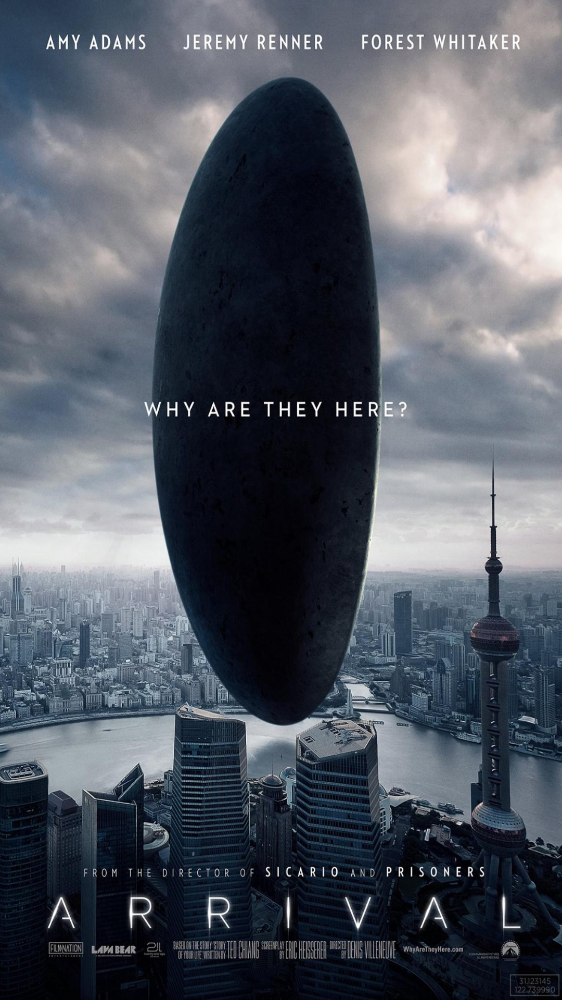

Arrival is a 2016 American science fiction film directed by Denis Villeneuve and written by Eric Heisserer.
It is based on the 1998 short story, "Story of Your Life" by Ted Chiang, and stars Amy Adams, Jeremy Renner, and Forest Whitaker. The film follows a linguist enlisted by the U.S. Army to discover how to communicate with aliens who have arrived on Earth, before tensions lead to war.
The film had its world premiere at the Venice Film Festival on September 1, 2016, and was released in the United States and Canada by Paramount Pictures on November 11, 2016.
It grossed $203 million worldwide and received praise for Adams's performance, Villeneuve's direction, and its exploration of communicating with extraterrestrial intelligence. Considered one of the best films of 2016, Arrival appeared on numerous critics' year-end lists, and was selected by the American Film Institute as one of ten "Movies of the Year".